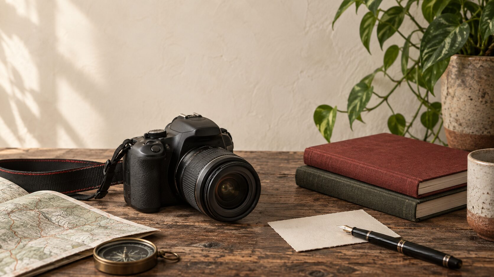
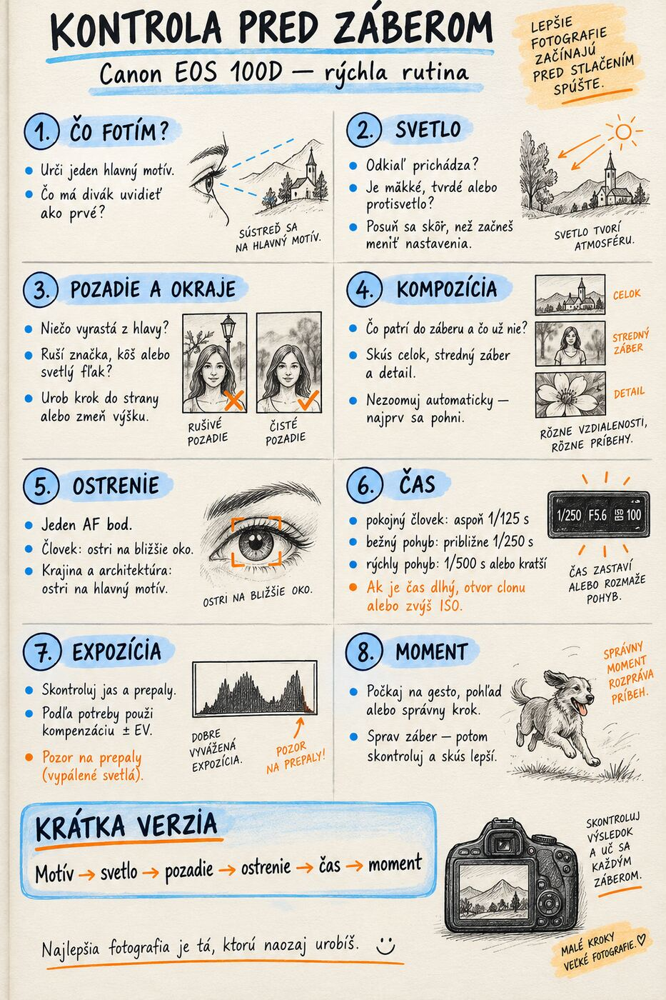
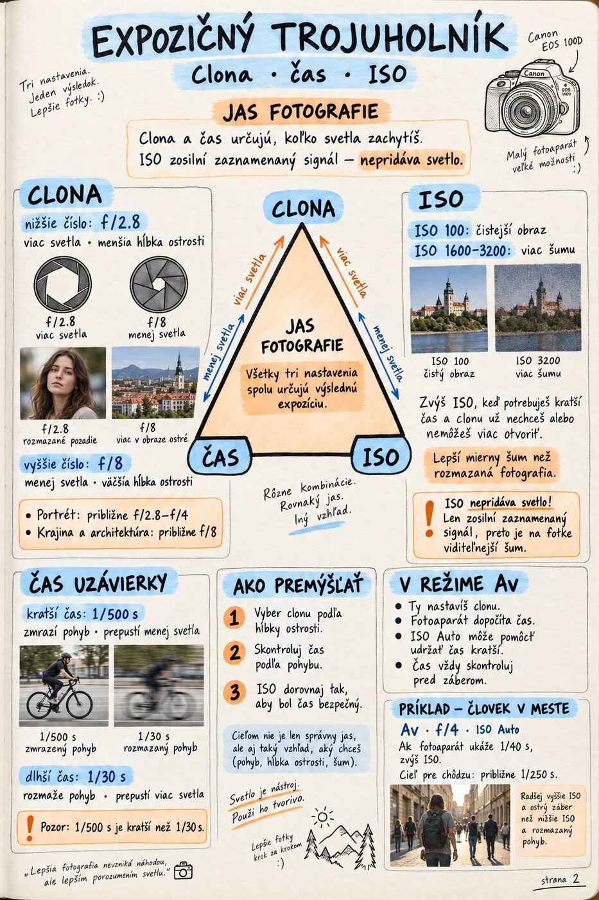
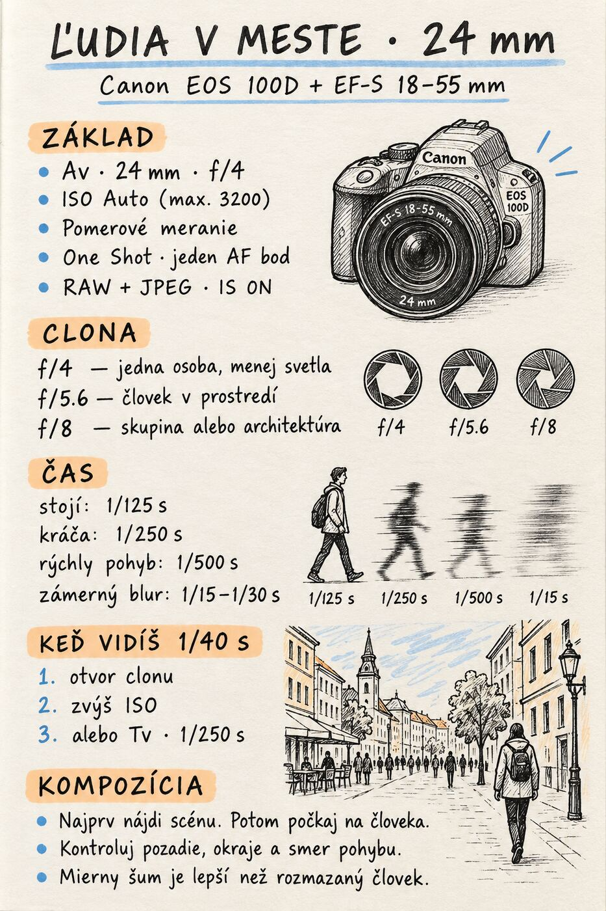
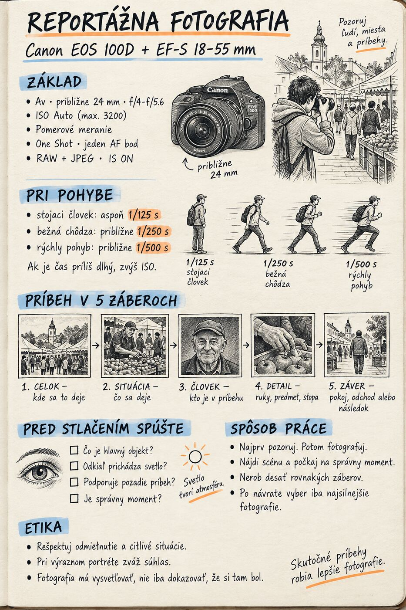
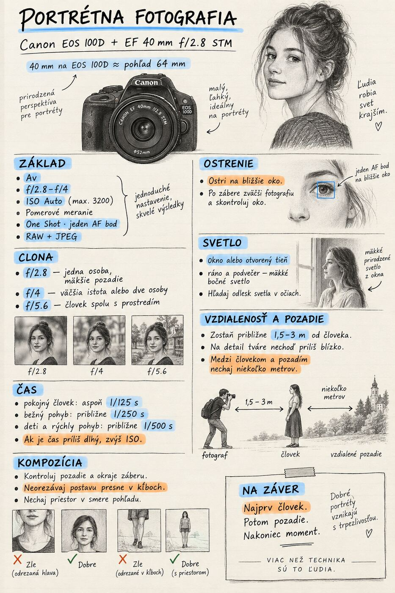
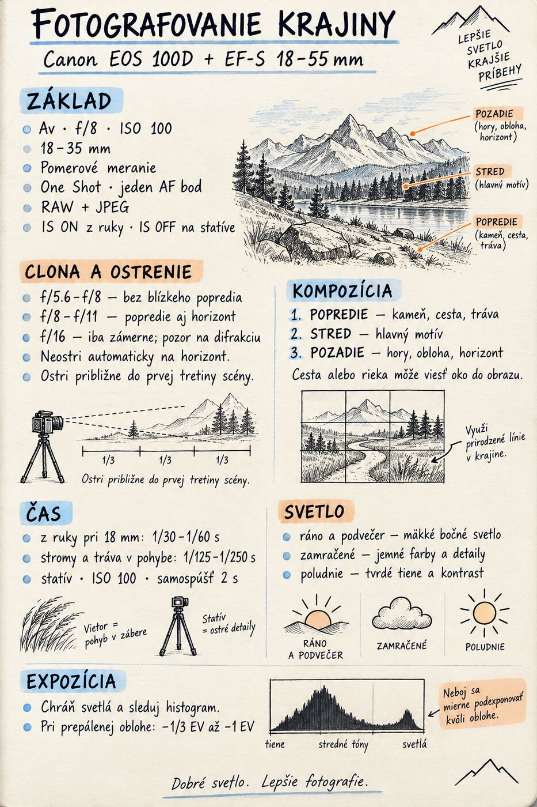
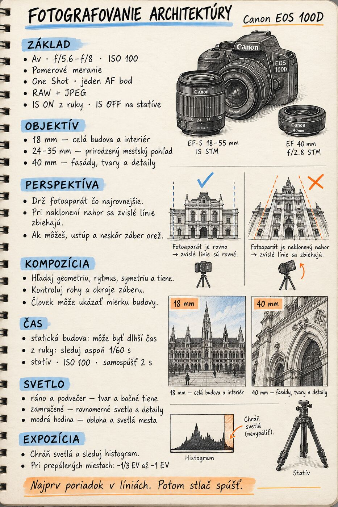
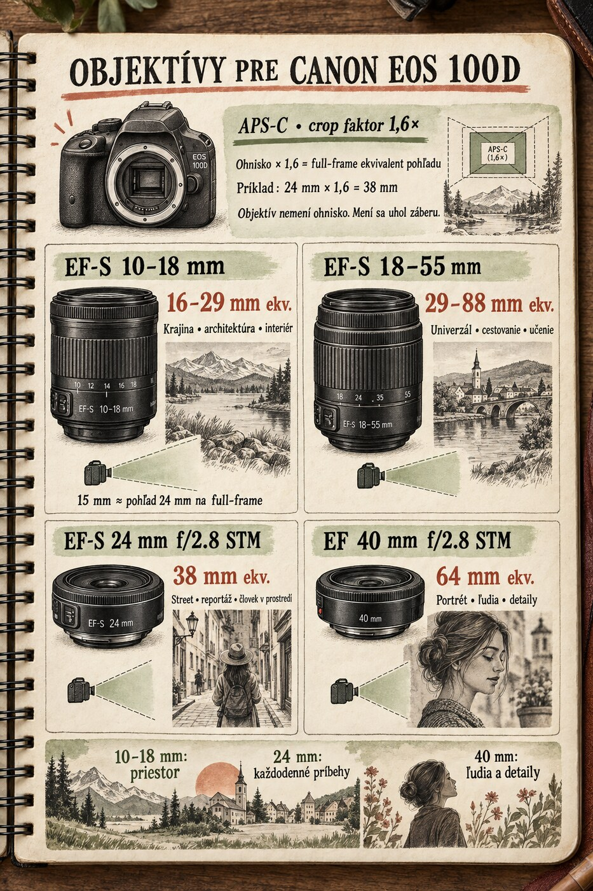

Pred fotením
Priprav sa, skontroluj nastavenia a pomenuj, čo chceš povedať.

Canon EOS 100D · praktická príručka
Osem ťahákov, ktoré ti pomôžu rýchlejšie pochopiť fotoaparát, lepšie vidieť svet a fotografovať s väčšou istotou.
Spôsob práce
Priprav sa, skontroluj nastavenia a pomenuj, čo chceš povedať.
Používaj jeden ťahák, všímaj si svetlo a hľadaj lepšie uhly.
Vyber, uprav a pri každom zábere pomenuj, prečo funguje alebo nie.







